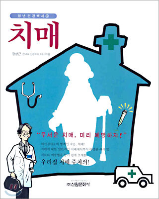
치매장상근 저 · 신원문화사
 장상근 바이오 신경외과의원CHANG'S BIO NEUROSURGICAL CLINIC
장상근 바이오 신경외과의원CHANG'S BIO NEUROSURGICAL CLINIC
공개 학술자료에서 확인된 척추·신경외과 분야 논문 및 학술발표입니다.

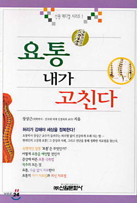
SPECIALIZED CARE
TEM CELL MECHANISM OF ACTION
체내에서 줄기 세포
추출·분리 공정 후 주사
PDGF, FGF, EGF,
VEGF, TGF-beta
분비(성장인자 분비)
분비된 성장 인자의
섬유모 세포 자극
자극된 섬유모 세포는 콜라겐,
탄력섬유 및
신생 혈관 조직 생성
섬유모세포, 탄력섬유,
피부상피세포, 지방세포,
혈관내피세포로 분화
주위에 있는 줄기세포의
활성 및 보충
수술 없이 내 몸 본래의 치유 성분으로 관절과 조직의 회복을 유도합니다.
본인의 혈액에서 자가 회복을 돕는 ‘성장인자’를 고농도로 추출하여 아픈 부위에 직접 주사하는 안전한 치료입니다. 외부 화합물질 주사를 배제하므로 가장 아늑하고 자연적인 재생 치료입니다.
탯줄 내부에 존재하는 깨끗하고 신선한 결합 조직으로, 연골과 뼈 재생에 도움을 주는 줄기세포가 밀집되어 있습니다. 나이가 들면서 스스로의 자가 세포 재생 능력이 떨어진 고령층 환자분들에게 인체 본래의 회복 속도를 보완해 줄 수 있는 재생의학의 차세대 성분입니다.
내 혈액을 그대로 사용하므로 알레르기나 면역 거부반응 등의 부작용 우려가 매우 낮습니다.
단순한 통증 차단이 아닌, 만성적인 염증을 가라앉히고 주변 조직의 자연스러운 자가 재생을 유도합니다.
채혈부터 추출, 시술까지 약 30분–1시간 내에 마무리되어 일상생활이 바로 가능합니다.
탯줄에서 얻어지는 생체 조직으로, 세포외기질과 다양한 생리활성 성분을 함유하고 있습니다.
증상이 나타난 부위뿐만 아니라 염증 반응과 손상된 조직 주변의 환경까지 폭넓게 고려합니다.
수나 지방을 직접 채취하는 과정 없이 사용할 수 있어 치료 과정에 대한 신체적 부담을 줄일 수 있습니다.
SPINE & JOINT
증상과 검사 결과, 기존 치료 이력을 함께 살피고
현재 상태에 필요한 진료 방향을 신중하게 제시합니다.
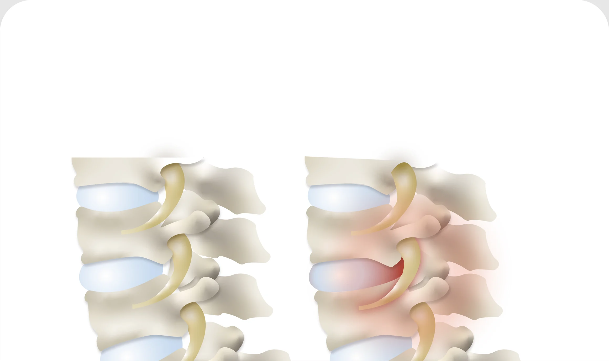
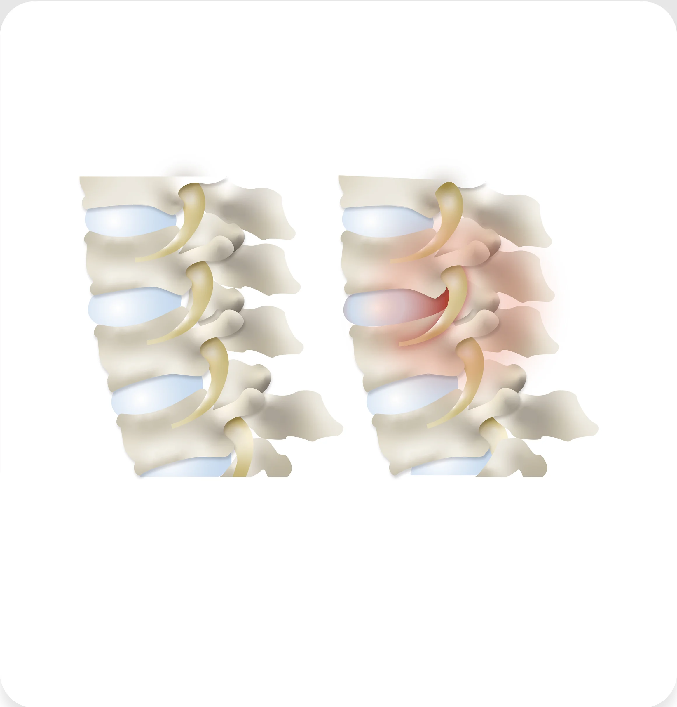
장시간 잘못된 자세나 반복적인 움직임으로 척추 주위 근육과 인대가 긴장되고, 추간판(디스크)에 압력이 가해지면서 미세 손상이 누적됩니다. 이후 디스크 돌출이나 퇴행성 변화가 진행되면 신경을 자극하거나 압박해 통증과 저림 증상이 나타납니다.
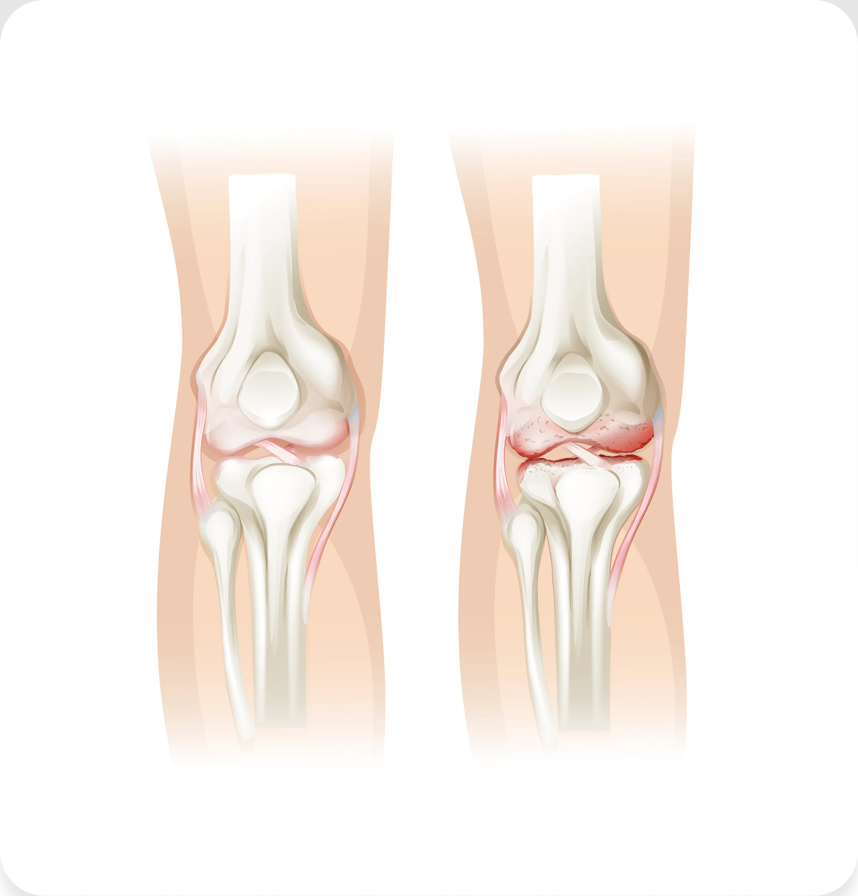
반복적인 사용이나 노화, 외상으로 관절 연골이 점차 닳아 얇아지고, 관절 내 충격 흡수 능력이 떨어집니다. 이로 인해 관절면에 마찰이 증가하고 염증 반응이 생기면서 부종과 통증, 움직임 제한으로 이어집니다.
NEUROLOGICAL DISORDERS
반복되는 두통과 어지럼증, 기억력 저하는 뇌·신경계가 보내는 신호일 수 있습니다.
증상과 병력을 세심하게 살피고 필요한 검사를 통해 원인을 체계적으로 확인합니다.
AUTONOMIC NERVOUS SYSTEM
자율신경 검사는 심박변이도 등을 바탕으로 교감신경과 부교감신경의 균형 및 신체의 스트레스 반응을 확인하는 검사로
어지럼증, 만성피로, 두근거림, 수면장애 등 자율신경 이상과 관련된 증상을 평가하고
개인별 관리 계획을 세우는 데 참고할 수 있습니다.
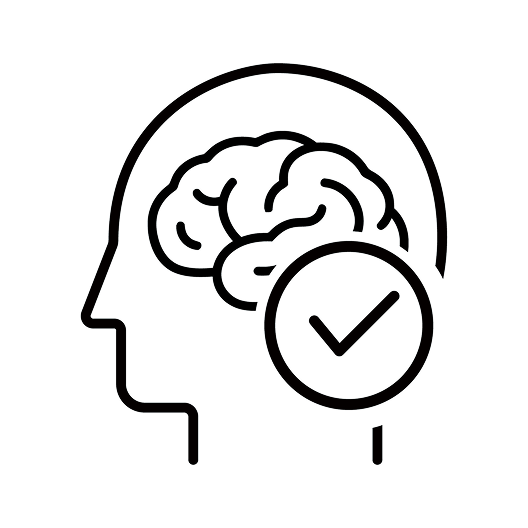
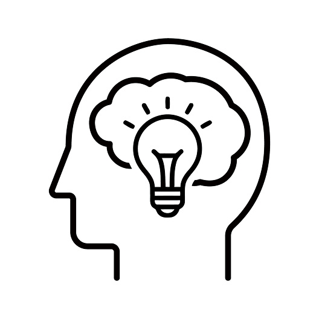
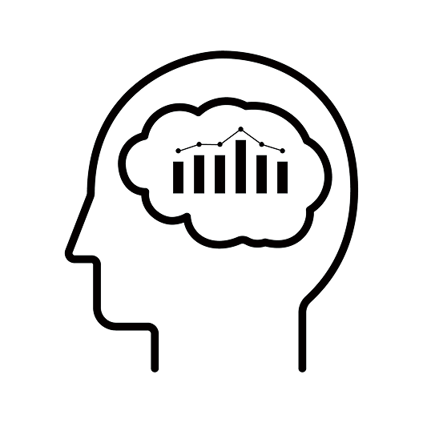
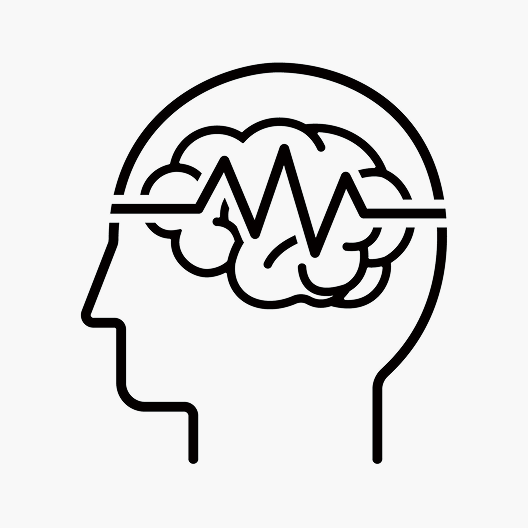
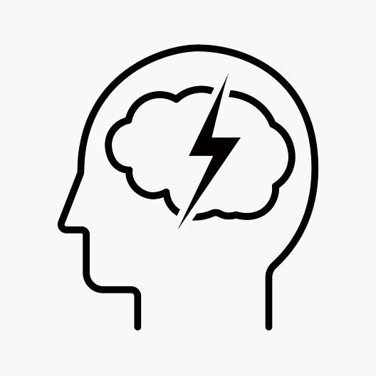
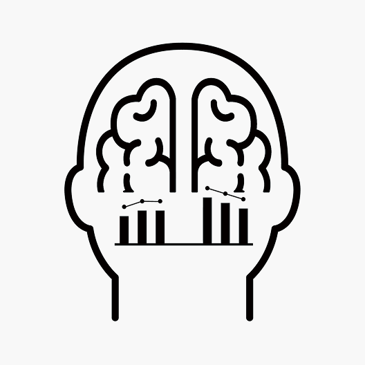
PREMIUM WELLNESS SOLUTIONS
우리 몸의 모든 세포는 정해진 수명이 있습니다.
장상근바이오신경외과에서는 항노화 줄기세포를 시술로 노화를 저지합니다.
자연스러운 현상
치료 및 관리가 필요한 질병
과거 노화는 누구나 겪는 자연스러운 현상으로 분류했지만,
2018년 세계보건기구는 질병으로 분류(코드MG2A)하였습니다.
분열과 분화를 거듭하는 줄기세포를 이용하여 혈관, 피부 등 조직 세포의 재생을 원활하게 만들어 전신의 세포를 젊은 상태로 만드는 시술입니다.
CARE PRINCIPLES
A.언제 어디서나 몸이 손상된 부분을 보정하기 때문에 온몸에 존재하고 있습니다. 나이와 함께 줄기세포의 수도 감소하며 세포 수는 개인차가 있습니다.
A.줄기세포는 나이로 인해 줄어든 줄기세포 량을 보충해 주는 것이기 때문에 젊은 시절 때의 내적, 외적 상태로 되돌려주는 작용을 한다고 보면 됩니다. 나이와 함께 쇠약해져서 생기는 질환의 예방과 치료에도 도움이 됩니다.
A.검사에서는 질병이 아니더라도 조직적으로는 병에 걸려 있을 수도 있습니다. 줄기세포는 손상된 조직을 복구해 주는 기능을 가지고 있어서 병의 시작을 예방하기 때문에 예방의학으로서도 역할을 합니다.
서양 의학은 약이나 수술 등으로 치료를 하지만 동양 의학은 자연 치유력으로 치료를 합니다. 줄기세포는 궁극적으로 동양 의학으로 자연 치유력을 활성화시켜 질병에 대한 저항력도 높이고 신체의 내, 외부를 함께 건강하게 해줍니다.
A.현재 줄기세포는 암에 직접적인 효과가 없습니다. 단지, 암치료로 손상된 부위를 복구하는 의미에서 보조요법 효과를 기대할 수 있습니다. 신체가 젊어지면 암과 싸울 수 있는 면역력도 강해질 수 있습니다.
A.당뇨병의 치료로서 줄기세포 치료가 적용되고 있으며, 당뇨병의 원인인 췌장 기능의 개선으로 당뇨병이 좋아지는 사례들이 보고 되고 있습니다. 인슐린의 투여량이 감소하거나 당뇨병성 망막증의 증상이 경감하거나 하는 등의 예가 있습니다.
A.줄기세포가 몸 안에 들어가서 작용하는 치료 기전은 100% 규명되지 않았기 때문에 치료 효과를 정확히 예측하기 어려우며, 사람마다 특성에 따라서도 다릅니다. 줄기세포 시술 효과는 초기 효과와 후기 효과로 나눠집니다.
초기 효과는 줄기세포가 증식하면서 세포나 줄기세포 자신이 활동하는데 필요한 생리 활성 물질, 사이토카인(Cytokine)을 분비하여 몸에 이롭게 작용합니다. 이 물질은 강력한 항염증 작용을 하는 성장인자 등이 포함되어 있어 이들 물질에 의한 효과를 초기 효과로 봅니다. 또한 줄기세포가 손상된 조직으로 호밍(homing)하여 조직으로 분화, 재생하는데 걸리는 시간은 한 달 정도 걸리며 후기 효과에 해당합니다.
단 한 순간이라도 편안하게 머무르실 수 있도록
환자를 위한 동선으로 설계하였습니다.
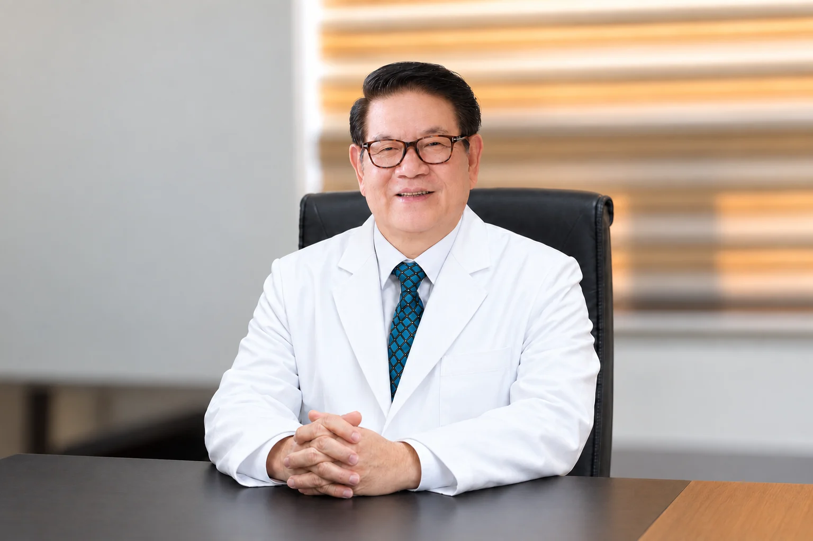
Jang Bio Neurosurgery Location
진료문의 및 예약을
친절히 상담해드립니다
네이버 예약을 통해
편하게 예약하세요